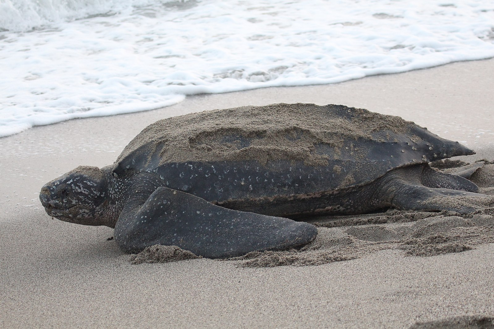

Leatherback sea turtles primarily live in the open ocean. They can be found in all tropical and subtropical oceans, with a range extending well into the Arctic Circle. They often follow their prey, diving deep into frigid waters and returning to the surface to regain warmth.
Adult leatherback sea turtles feed primarily on jellyfish, supplementing their diets with other soft bodied organisms like cnidarians, tunicates, and cephalopods.
Leatherback sea turtles are currently listed as endangered.
A major threat to leatherback sea turtles is marine debris. It is estimated that one-third of adult leatherbacks have ingested plastic, often in the form of plastic bags that mimic their prey, jellyfish.
Other threats to the species include light pollution, bycatch, boat strikes, and chemical pollution.
 Home